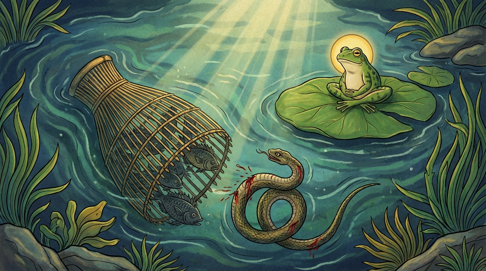

9. හරිතමණ්ඩූක ජාතකය (239)
“ආසීවිසම්පි මං සන්තං” (විෂ දළ ඇති මා කෙමනෙහි කටට පිවිසි කල්හි) යන මේ දේශනාව බුදුරජාණන් වහන්සේ වේළුවනාරාමයෙහි වැඩවාසය කරන සමයේ අජාසත් රජතුමා අරබයා දේශනා කළ සේක. කොසොල් රජුගේ පියා වූ මහා කොසොල් රජතුමා, බිම්බිසාර රජතුමාට දියණිය සරණ පාවා දෙමින් තමන්ගේ දියණියගේ ස්නාන චූර්ණ මූලයක් (නෑම සඳහා දෙන වියදමක්) ලෙස කාසි ග්රාමය ලබා දුන්නේය. අජාසත් රජතුමා විසින් පියා මරා දැමූ කල්හි රජතුමාට ආදරයෙන් සිටි ඈ (මව) නොබෝ දිනකින්ම ශෝකයෙන් කලුරිය කළාය. අජාසත් රජතුමා මව කලුරිය කළ පසුවත් ඒ ගම භුක්ති විඳියි. කොසොල් රජතුමා “පීතෘඝාතක සොරාට මගේ කුලයට අයත් ගම නොදෙන්නෙමි” යි ඔහු සමඟ යුද්ධ කරයි. ඇතැම් දිනක මාමාට ජය වෙයි. ඇතැම් දිනක බෑණාට ජය වෙයි. යම් දවසක අජාසත් දිනයි ද එකල්හි රථයෙහි කොඩි ඔසවා මහත් යසසින් නගරයට පිවිසෙයි. යම් දවසක පැරදෙයි ද එකල්හි දොම්නසට පත්ව කිසිවෙකුටත් නොදන්වා ම පිවිසෙයි. ඉක්බිති එක් දිනක් භික්ෂූහු දම්සභාවෙහි දී “ඇවැත්නි! අජාසත් රජතුමා මාමා පරදවා සතුටු වෙයි. තමා පැරදුන විට දොම්නසට පත් වෙති” යි කථාවක් මතු කළහ. බුදුරජාණන් වහන්සේ එහි වැඩමවා “මහණෙනි, මා එන්නට ප්රථම මෙහි කවර කථාවකින් යුතුව සිටියාහු ද?” යි විචාරා, “මෙ නම් කථාවෙන්” යයි කී කල්හි, “මහණෙනි! මොහු දැන් පමණක් නොව පෙරත් දිනා සතුටු වෙයි. පැරදුන විට දොම්නසට පත් වූයේය” යි වදාරා අතීත කථාව ගෙනහැර දැක්වූ සේක.
අතීතයේ බරණැස් නුවර බ්රහ්මදත්ත රජු රාජ්ය කරන කල්හි බෝසතාණන් වහන්සේ නිල් මැඩි (ගෙම්බා) යෝනියෙහි උපන්හ. එකල්හි මිනිස්සු ගංගා, දිය කඳුරු ආදී තැන්වල මසුන් අල්ලා ගැනීමට කෙමන් (මාළු උගුල්) ඇටවූහ. එක් කෙමනකට බොහෝ මත්ස්යයෝ ඇතුළු වූහ. ඉක්බිති එක් දිය නයෙක් මසුන් කනු රිසියෙන් ඒ කෙමනට ඇතුළු විය. එවිට බොහෝ මත්ස්යයෝ එක්වී ඌ සපා කමින් එකම ලේ විලක් කළහ. සර්පයා පිළිසරණක් නොදකිමින් මරණ බියෙන් තැති ගෙන කෙමන් කටින් පිටතට පැමිණ, වේදනාවෙන් යුතුව දිය කෙළවර වැතිර සිටියේය. නිල් මැඩියා ද ඒ අවස්ථාවෙහි උඩට පැන කෙමන රඳවා තිබූ ඉහළ කණුවෙහි වැතිර සිටියේය. සර්පයා තමන්ට විනිශ්චය කරන තැනක් නොලබන්නේ එහි වැතිර සිටින මැඩියා දැක, “යහලු නිල් මණ්ඩුකය! මේ මාළුන්ගේ ක්රියාව නුඹට රුචි ද?” යි විමසමින් පළමු ගාථාව ප්රකාශ කළේය.

“විෂ දළ ඇති මා කෙමනෙහි කටට පිවිසි කල්හි, මේ මත්ස්යයන් මා සපා කමින් සිටියි. නිල් මැඩි දෙන මව කොට ඇති පින්වත, තොපට එය රුචි වේ ද?”
යනුවෙන් පළමු ගාථාව කීවේය.
එහි, ආසි විසං මමං සන්තං යනු විෂ ඇති මා (පැමිණි විෂ ඇති මා) යන්නයි. රුච්චතෙ හරිතා මාතා යං මං ඛාදන්ති මච්ඡකා යනු “නිල් මැඩි පුතුනි, මේ කරුණ ඔබට රුචි වේ ද?” යනුවෙන් කියයි.
ඉක්බිති ඔහුට පිළිතුරු දෙන නිල් මැඩියා, “එසේය යහළුව, එය මට රුචි වෙයි. ඒ මක්නිසාද යත්? ඉදින් නුඹ ද නුඹේ ප්රදේශයට මසුන් පැමිණි විට ඔවුන් කන්නෙහිය. මත්ස්යයෝ ද තමන්ගේ ප්රදේශයට නුඹ පැමිණි විට නුඹව කති. තම තමන්ගේ සීමාවෙහි හෙවත් තම ගොදුරු බිමෙහි දුබලයෙක් නම් නැතැ”යි කියා දෙවන ගාථාව ද ප්රකාශ කළේය.
“යමෙකුට යම් තාක් කල් බලය හෝ සමෘද්ධිය පවතී ද, ඒ තාක් ඒ පුරුෂයා අනුන්ව ගසා කන්නේය. යම් කලෙක අනෙක් අය බලවත්ව ඔහුට පහර දෙත් ද, එකල පෙර පහර දුන් ඔහු ම පහර කෑමට ලක් වේ.”
යනුවෙන් දෙවන ගාථාව කීවේය.
එහි විලුම්පතෙව පුරිසො යාවස්ස උපකප්පති යනු පුරුෂයාගේ අධිපතිකම පවතින තාක්, ක්රියාත්මක වන තාක් ඔහු අනිකෙකුට පහර දෙයි. යාව සො උපකප්පති යනු ද පාඨයකි; අනුන්ට පහර දීමට හැකියාව ඇති තාක් කල් පහර දෙයි යන අර්ථයයි. යදා චඤ්ඤො විලුම්පන්ති යනු යම් කලෙක අන් අය අධිපති වී පහර දෙත් ද, සො විලුත්තො විලුම්පති යනු පහර ලත් ඔහු අනුන්ට ද පහර දෙයි (නැවත පහර කෑමට ලක් වෙයි). විලුම්පතෙ යනු ද පාඨයකි. මෙහි අර්ථය ද එයම යි. විලුම්පනං යනුවෙන් ද කියති; එහෙත් එහි අර්ථය නොගැලපෙයි. මෙසේ පහර දෙන්නා නැවත පහර කෑමට ලක් වෙයි. බෝසතාණන් වහන්සේ මේ නඩුව විසඳූ කල්හි දිය නයාගේ දුබල බව දැන ගත්, “මේ අපගේ සතුරා යැයි” සිතූ මත්ස්ය සමූහයා කෙමන කටින් පිටතට පැමිණ දිය නයා එහිම මරණයට පත් කොට ගියාහුය.
බුදුරජාණන් වහන්සේ මේ ජාතක ධර්ම දේශනාව ගෙනහැර දක්වා නිමවා වදාළ සේක. “එකල දිය නයා වූයේ වර්තමාන අජාසත් රජ ය. නිල් මැඩියා වනාහි මම ම වූයෙමි” යි වදාළ සේක.
නව වැනි වූ හරිතමණ්ඩූක ජාතක වර්ණනාව නිමියේය.